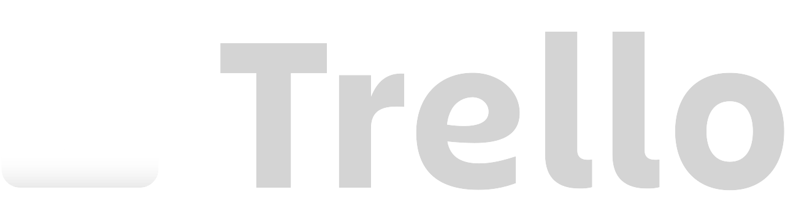
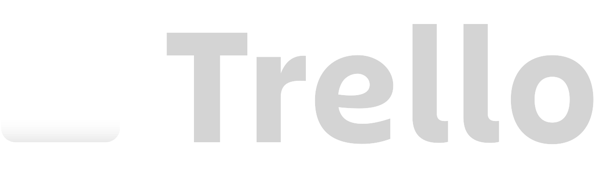

Rota Verde Ecoturismo e Conservação Ambiental
Sobre mim
Rota Verde Ecoturismo e Conservação Ambiental
Sobre mim
O que é o Ecoturismo???
Porque eu deveria me preocupar com isso?
Ao contrário do turismo convencional, que muitas vezes pode ter impactos negativos sobre o meio ambiente e as comunidades locais, o ecoturismo busca minimizar esses impactos, promover a conservação ambiental e contribuir para o desenvolvimento econômico das regiões visitadas.
Mais de 60% dos viajantes
estão dispostos a pagar mais por essas experiências...
Algumas agências para conhecer:


Mas... como seguir no ramo?
O que faz de uma empresa ser "eco"?
1 • Respeito ao Meio Ambiente
2 • Educação Ambiental
3 • Integração com a Comunidade Local
4 • Preservação da Cultura e Patrimônio
5 • Segurança e Qualidade dos Serviços
"Ao adotar essas práticas e comprometer-se com os princípios do ecoturismo, uma empresa pode oferecer experiências autênticas e sustentáveis aos viajantes, ao mesmo tempo em que contribui para a conservação do meio ambiente e o desenvolvimento das comunidades locais."
Vamos analisar a qualidade do descarte de lixo da sua empresa.
Crie a sua conta aqui no site e faça essa avaliação!
Caio Acayaba Furtado
 

Olá! Meu nome é Caio, tenho 18 anos e esse é o meu primeiro site... Muito obrigado por chegar até aqui! Trabalhei por dois anos como condutor de atividade de aventura na cidade de Brotas (capital do ecoturismo no estado de São Paulo) e por meio deste projeto procuro propagar a cultura da "Rota Verde", o ideal de sempre seguir o caminho mais sustentável e respeitoso possível com a natureza!